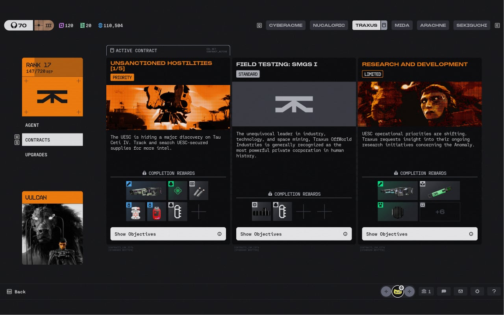
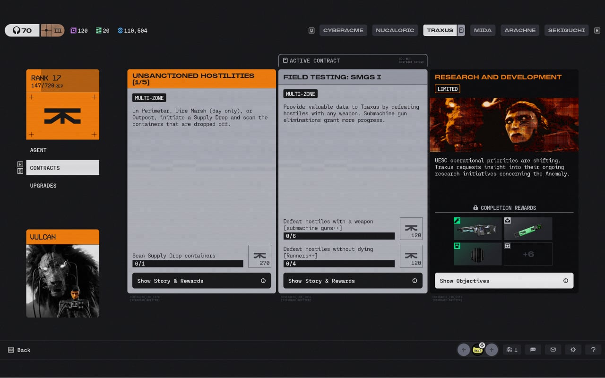

Xét về yếu tố thu hút người chơi, những nhiệm vụ đóng vai trò là mục đích chính và quan trọng để thúc đẩy người chơi vào game. Vừa tăng tính thử thách vừa tạo Rewards để duy trì trò chơi. Giao diện nhiệm vụ của Marathon (2026) được biểu diễn dưới dạng các Bảng nhiệm vụ (Quest Cards) có thể Flip lại khi click chuột vào.
Hình thái ban đầu của các cards được biểu diễn với những gam màu sặc sỡ, hình ảnh sinh động cùng phần Vật phẩm Yêu cầu hiển thị trực tiếp icon phẳng 2D của món đồ nhiệm vụ cần tìm, giúp người chơi ghi nhớ hình dáng và màu sắc trước khi vào trận.
Hiển thị lượng điểm kinh nghiệm Faction, tiền tệ và trang bị mở khóa ở cấp độ tiếp theo hấp dẫn ngay dưới phần mô tả ngắn gọn.
Khi click chuột vào nhận nhiệm vụ, các Quests này hiển thị mô tả kỉ hơn và các Objectives kèm theo, với hình thái xám đen để phân biệt rõ ràng với các nhiệm vụ chưa nhận.

Hiển thị gam màu rực rỡ, hình ảnh sinh động, icon vật phẩm 2D trực quan cùng phần thưởng Faction hấp dẫn.

Chuyển sang hình thái xám đen, chi tiết hóa mô tả nhiệm vụ và danh sách các Objectives cần hoàn thành.